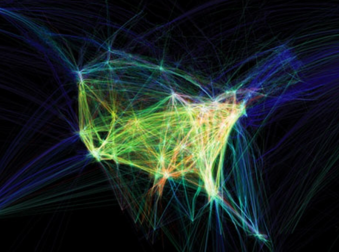

Aaron Koblin
Bio
I don't think there are any key characteristics. If anything I find the concept of his arts a little crazy. Tracking the flights in the U.S, creating images from brand logos, hiring people to draw left facing sheeps, and how you taste based on your diet. The last 2 concept are kind of crazy in terms of ideas.